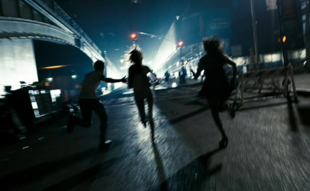

Right up close
A face, a look, a chain, a sleeve. These quick details give the verses a personal feel and let the edit breathe between wider shots.
Camera: Tight framing · slow move in · stay with the eyes.
We start with you in the city, then build the video around a series of performance takes. London details and the reference-style cutaways break up each take. As the track grows, the frame gets wider and the movement picks up.
The opening is a low-angle wide shot of you in the city, followed by still mid-shot performances. We’ll repeat key performance and movement setups across 3–5 environments, then weave the strongest takes together with London B-roll and the selected style references so the edit feels seamless. Alongside the moving footage, we’ll capture composed, portrait-like frames for mood: you still in the car, close cinematic details, and faces or street lights drifting out of focus. The blur will recur throughout, giving the video a soft, almost dreamlike edge against the darker blue London palette. Your friends join the wide follow and group shots.
Still mid-shots carry the verses. We repeat the same key sections in each location, giving the edit matching takes to move between smoothly.
Locked performance frames, portrait-like stills, wide follow shots, slow motion, intentional blur, and camcorder footage build a varied but connected edit.
City of London or Canary Wharf, with 3–5 chosen environments. A rented warehouse or small interior can give us a controlled performance setup.
Open on the artist, establish London, then alternate performance with the detail and movement shots. The final stretch brings back the performance and builds into the group and slow-motion footage. We’ll adjust the timecodes to the track’s actual verses and hooks.
These frames guide the composition and mood. We’ll mix portrait-like still frames with moving, cinematic shots, then repeat key setups so the finished edit can flow between locations.
A face, a look, a chain, a sleeve. These quick details give the verses a personal feel and let the edit breathe between wider shots.

A still, portrait-like frame through the car window. Let reflections and soft focus drift across the glass while you hold the moment; we can return to this image later in the edit.

We first see you with room around you. A wide, quiet view gives the video somewhere to start before we move closer.

Follow you through the street, then let the camera sweep out of focus. We’ll capture several blurred passes to carry us between scenes and tie separate locations together.

The space opens up for the hook. You perform alone; a few distant silhouettes are optional. Use the fog and strobe for this setup, then keep the other scenes simpler.

A mostly cool portrait with one warmer edge. Keep this as a brief look, rather than carrying it through every setup.

A single person against a large, simple background. This gives the indoor performance a different scale from the street scenes.
Start on a still, low-angle wide shot of you in the city. Let the buildings and street establish the setting.
Opening shotMove in to a steady mid-shot for the first vocal lines. Keep the performance direct and let the delivery carry the moment.
Repeat the performance from the same height with small changes in framing and delivery. We’ll capture enough clean takes to carry the verses through the edit.
Step away from the performance for a few wide views: red buses passing, building fronts, signs, traffic, and the street around you. These shots show where we are.
B-rollFollow you and your friends moving through the city. Keep the camera close and let the buildings and street movement pass around the group. Capture a few soft, out-of-focus passes as well as clear ones, so the edit can drift between sharp portraits and blur.
Wide followGroupReturn to the still mid-shot performance in a new spot. Repeating the same framing in a different place ties the video together.
Show you head to toe against the street or buildings. Walk, turn, or cross the frame in slow motion. Repeat the move in a few locations, with some passes kept sharp and others allowed to fall into blur.
B-rollSlow motionFilm a composed portrait of you sitting inside the parked car, seen through the window as reflections and focus drift across the glass. Then pick up accessories, a car wheel, signs, passing faces, and street reflections. Mix sharp details with deliberate blur, and repeat a few angles for smooth cut points.
Detail B-rollGather your friends in one place and film a slow-motion group shot. Start wide, then add a top-down angle looking down on everyone together.
Group B-rollSlow motionCapture a few loose camcorder moments, then layer them between the cleaner performance takes as flashes of memory and texture.
Texture insertCome back to the performance in another environment. Use the same framing so the repeated setup feels like a visual refrain through the video.
Bring the mid-shot performance back across the strongest locations. Cut between the takes, then open out to the low-angle wide shot from the start.
Final hookRepeat locationsWeave together the recurring images: bus passing, car-window portrait, accessories, signs, blurred faces, and camcorder flashes. Reuse the strongest motifs from earlier scenes to make the ending feel connected.
B-roll montageEnd on the top-down group shot or a close performance frame, depending on the final beat. Hold long enough for the ending to land.
Final imageA London day that drifts into an atmospheric, dreamlike run of performances, portraits, and blurred movement.
Familiar streets.
Your London.
We start in London during the day and build from familiar details: buses, buildings, signs, the car, and the people around you. Repeated performance and movement setups link the locations into one continuous world, with portrait-like still frames and drifting focus giving it an ethereal quality.
EUPHORIC
Quicker cuts and bigger movement when the hook lands.
NOSTALGIC
Grain, held moments, places that feel familiar.
EDGY
Close portraits and sudden changes in pace.
The camera starts back, follows you through the city, then gets closer as the song builds. We pull back for the quieter section and close in again for the last hook.
Mix composed, still portrait frames with moving cinematic shots. Use soft focus and motion blur throughout as a recurring visual texture, with a few crisp details to bring the viewer back in.
Hold longer during the verses. Let the hooks move faster, then give the final look room to land.
You are the main performer. Friends join the follow shot and the slow-motion group sequence.
Clothes should sit within the blue and red palette. A stylist can join if you’d like one.
City of London or Canary Wharf, plus a rented warehouse or small indoor space. We’ll choose 3–5 environments together and group nearby locations where possible.
Your car, which you’ll drive, or a Lime bike. Either can be left out if it doesn’t suit the final plan.
Sony FX3, 11–18mm wide lens, 10mm prime lens, camcorder, camera support, strobe, spotlight, fog machine, overhead frame, and grip gear.
Low-angle opening, still mid-shot performances, London buses and buildings, street follow, slow-motion group, details, and camcorder inserts.
Call time is midday. With three hours, we’ll keep to 1–2 nearby environments. Six hours gives us time to repeat the performance setups across 3–5 locations and collect the supporting footage.
20 minutes to set up; 40 minutes for the first performance takes; 35 minutes for London establishing shots and the follow; 55 minutes for details and the group sequence; 20 minutes for another performance setup; 10 minutes to wrap.
30 minutes to set up; 90 minutes for performance takes across locations; 60 minutes for London B-roll and follow shots; 60 minutes for the slow-motion group sequence; 75 minutes for close-ups and camcorder footage; 45 minutes for moves, pickups, and wrap.
We’ll shoot in the available midday conditions and keep the overall picture cool and dark in the grade, so the London scenes hold together across locations.
4K capture. Use 24 fps for the main performance and 60 fps for selected slow-motion inserts. Set shutter near 1/50 at 24 fps and 1/125 at 60 fps.
Record one uninterrupted full-song master, then repeat key sections and movements in each location. Keep the framing, screen direction, and actions consistent where we want to cut between places. Those matching takes, portrait frames, and recurring blur shots will be woven together into one seamless final video.
Use reliable face/eye autofocus for moving performance, check focus before each take, and keep white balance consistent across setups. Avoid changing exposure mid-take.